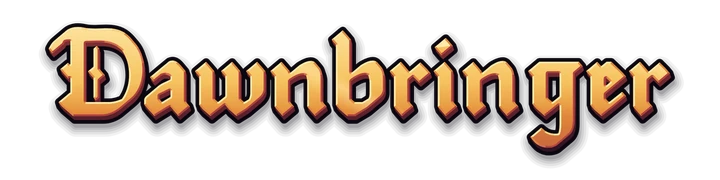

dynamic_light_rig.gd
Light budget
Up to 6 lights on high and 2 on low. Off stops processing, so it costs nothing.
Case study 01 // game engineering // art direction

Votive Gothic pixel art on a deterministic Godot 4.5 core, guarded by 4,671 GUT tests across six verification layers.
 R4 CONCEPT ART
R4 CONCEPT ART01 // v0.9 lighting // in development
Drag across one Godot 4.5 fight to switch the v0.9 lighting rig between off and high.
dynamic_light_rig.gd
Up to 6 lights on high and 2 on low. Off stops processing, so it costs nothing.
backdrop_wet + fog_scatter
The floor reflects each light and the mist scatters it, both synced every frame.
ThorVG // Godot 4.5
Heroes and the Charnel Maw are vector rigs under 500 KB, with no filter or image tags.
≤ 3 Hz flicker // Reduce motion
Flicker stays under 3 Hz, and Reduce motion freezes flicker, ripples, mist and shock rings.
02 // Stack
File counts measured on disk across the game and its tools. Select a node to read its role.
Dawnbringer stack // 7 languages
01 // GDScript // 1,068 files1,051 files in game/ and 17 in tools/, including 517 GUT test files, plus 81 .tscn scenes.
03 // Architecture
Data, a deterministic rules core, the 2x renderer and edge services, with six test layers under all four.
battle_sim.gd // 1,398 lines
No randi, randf or RandomNumberGenerator in the battle folder. Ties go to time left, then to the hero.
docs/TESTING.md // 4,671 GUT
L0 checks rules in under 2 minutes. L5 bots play from screenshots on 12 screen formats.
game/content + game/i18n
Content is JSON only, with 105 items, 19 Landlords and 6 biomes, in 14 shipped locales.
tools/*-worker
Workers take bug reports and opt-in telemetry. PvP answers 503 unless enabled, and v0.7.2 ships it off.
04 // Art direction
Five pillars, each with a test an artist can run, and 32 colours locked in palette.json.
"A candle carried through a house that belongs to someone else."docs/v3/ART_DIRECTION.md // the direction in one line
#FFE9A8 appears only in its reserved roles.
A flat #0B0710 shape on #3A2A3C still reads at design size.
Anticipation lasts at least twice the strike frame.
Idles move 1 to 2 design pixels; a whole-sprite slide fails.
Any frozen combat frame shows who is winning within 2 seconds.
Outlined: base rampGold ring + %: accent quotaStruck: forbiddenR: reserved role
9 ramps, light from the upper left, a selective 1 px #0B0710 outline and no anti-aliasing.
Click a swatch to see its ramp and biome role, then copy its hex.
05 // Motion
Speed the champion's light attack up to 4x and watch the 33 ms floor drop the smear frame first.
Frame 1 of 6, anticipation. 110 ms at 1x. The hit lands at 310 of 620 ms.
Peak hold 160 ms and impact 90 ms never drop (ANIMATION_DIRECTION.md:32-34). Every sprite is generated from design-space rigs at 2x and sampled sharp-bilinear by hd_sharp.gdshaderinc.